At the southernmost extremity of the Indian subcontinent, Kanyakumari is the meeting point of the Bay of Bengal, Indian Ocean and the Arabian Sea. It is a popular pilgrimage destination and is of great spiritual significance to Hindus, being dedicated to the goddess Devi Kanya, who is an incarnation of Devi, Shiva's wife. On shore, is the Kumari Amman Temple where she is worshipped - the image of her inside the temple wears a diamond nose stud of such brilliance it is said to be visible from the sea. Male visitors must be shirtless and wear a dhoti before entering the temple; non-Hindus are not allowed in the inner sanctum. Needless to say all these rules were waived for us upon payment of Rs 30 each ...n . !
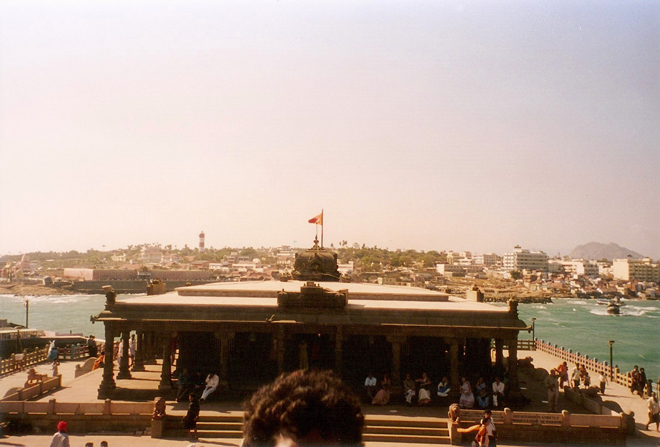
OWe took an overcrowded ferry from the jetty in Kanyakumari out to the Vivekananda Memorial which is on two rocky islands projecting from the sea about 400m offshore and which are known as the Pitru and Matru tirthas. In 1892 they attracted the attention of the hindu reformer Vivekananda (1862-1902) who swam out to the rocks to meditate. The Memorial build in 1970 houses a statue of the saint and the footprints of Kanya Devi can be seen here too - at the spot where she performed her penance.. !
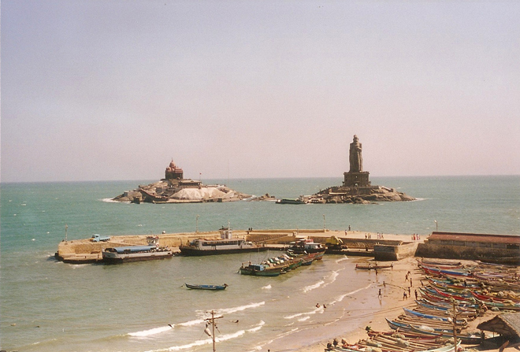
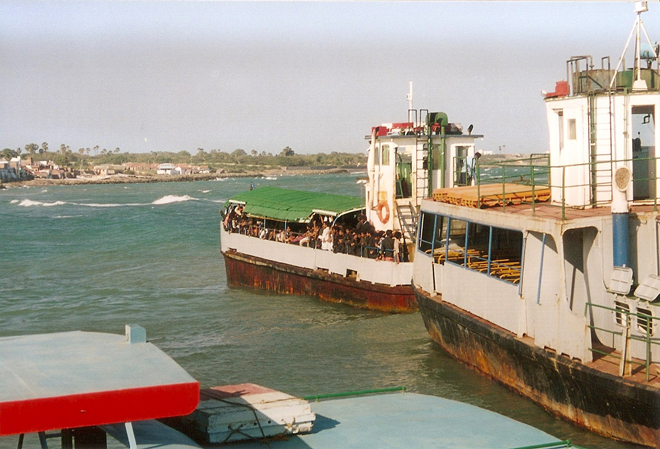
We met some pilgrims - Hindu boys who were fasting, abstaining from meat, alcohol and sex. They were all very devout but clearly randy as hell... !
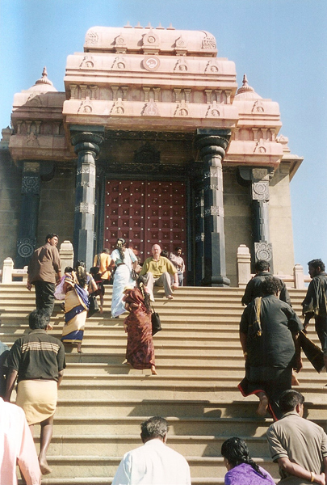
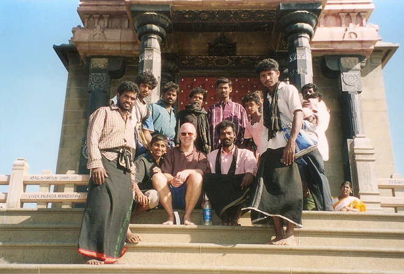
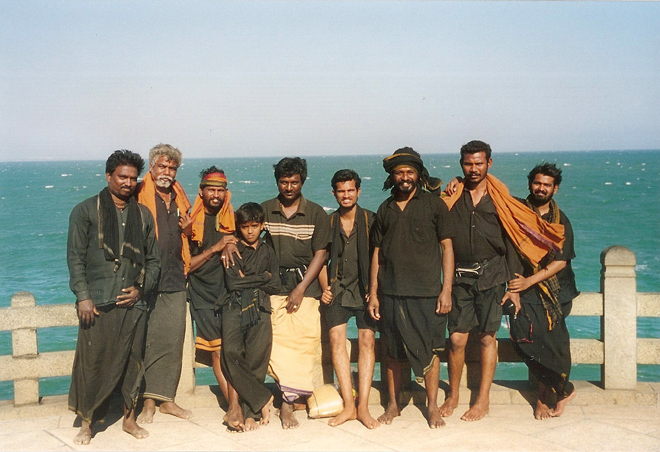
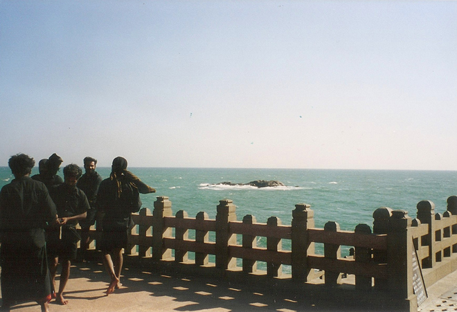
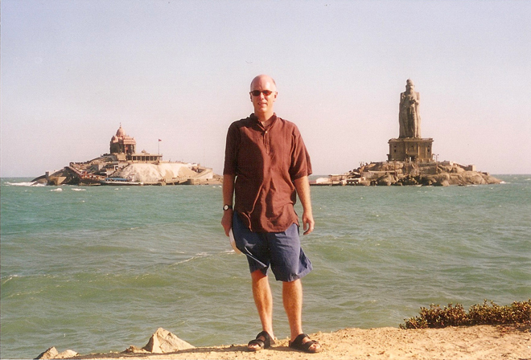
We then adjourned to the local beach where we watched the sun going down at the end of an eventful day. On full moon day (in April) it is said to be possible to watch the sun setting and the moon rising on the same horizon. We then returned to Trivandrum for a day of shopping - including our heavy statue of Vishnu - before catching our return flight home.. !
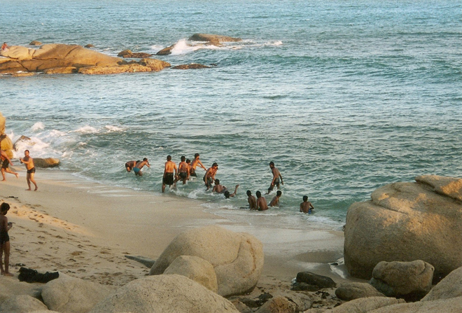
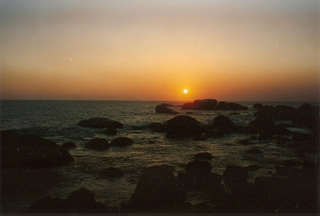
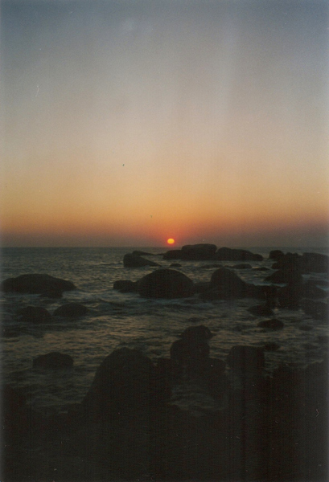
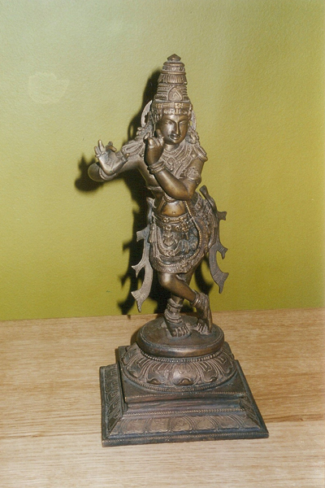